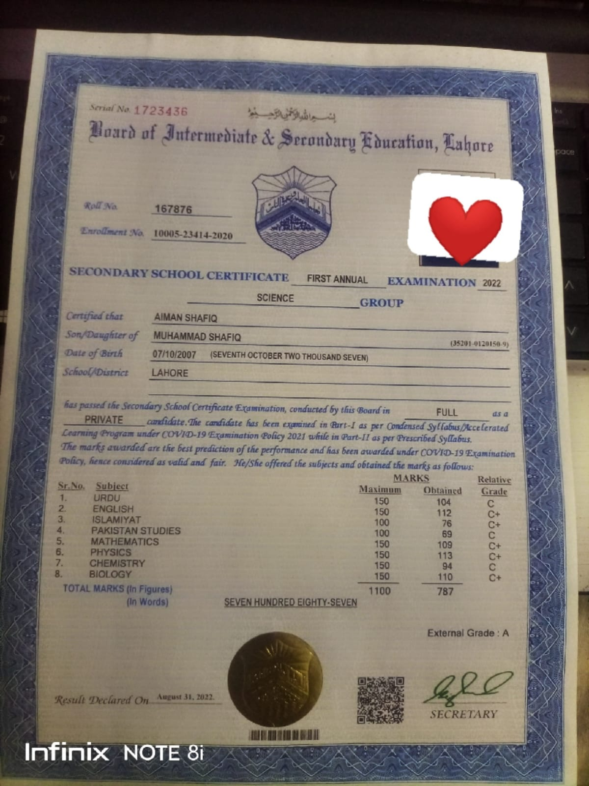
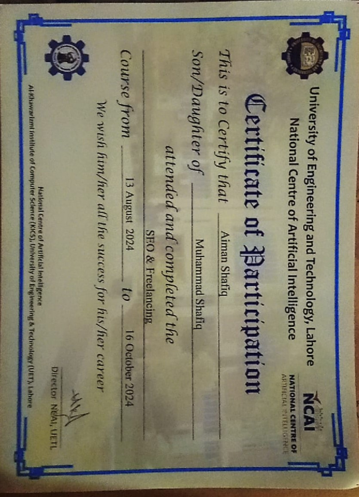

I successfully completed my Matriculation with 787 marks, showcasing my academic ability, discipline, and determination to excel in my studies
Obtained 787 marks in BISE Lahore Board.
I completed my FSC (Pre-Engineering) with 936 marks, demonstrating strong analytical
and problem-solving skills.
I am committed to academic excellence and keen to apply my knowledge in higher studies.
Obtained 936 marks in BISE Lahore Board.
Completed a paid SEO course and received a certificate.
Certified from UET Lahore.